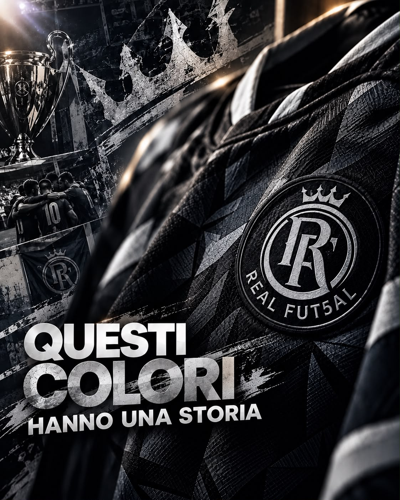

Il nero e l’argento rappresentano molto più di una scelta estetica: custodiscono le nostre origini, i nostri successi e una filosofia sportiva costruita negli anni attraverso sacrifici, ambizione e una mentalità vincente.
Tutto ebbe inizio nel 2010, con il glorioso Real E Non Solo ASDC, un progetto ideato e realizzato da Luca Toniolo, nato grazie all’impegno condiviso dei suoi sette fondatori.
È lì che prese forma un’identità destinata a lasciare il segno nel panorama del futsal per atleti sordi, con colori eleganti, particolari e immediatamente riconoscibili: il nero e l’argento.
UNA STORIA COSTRUITA CON I SUCCESSI
Nel corso degli anni, il Real E Non Solo ASDC ha conquistato un palmarès di assoluto prestigio, costruendo un percorso sportivo ricco di successi e soddisfazioni.
Prima squadra: 8 Scudetti, 2 Coppe Italia, 4 Supercoppa, 1 Winter Cup.
Under 21: 5 Scudetti e 1 Champions League
Over 40: 1 Scudetto
A questi successi si aggiungono numerosi piazzamenti sul podio nelle competizioni FSSI e DCL.
Un percorso costruito con impegno, competenza, sacrifici e una forte cultura della vittoria, grazie al contributo di dirigenti, staff e atleti che negli anni hanno condiviso obiettivi ambiziosi e contribuito a raggiungere traguardi prestigiosi.
Con questo importante palmarès, il Real E Non Solo ASDC rivendica con orgoglio il proprio primato nazionale assoluto per numero di titoli conquistati nel futsal per atleti sordi.
Un primato che si fonda sui risultati ottenuti sul campo e che racconta una storia sportiva importante, fatta di lavoro, dedizione, esperienza e passione.
Un patrimonio che merita di essere ricordato e valorizzato per ciò che ha rappresentato e continua a rappresentare nella storia della nostra disciplina.
2023: UN NUOVO CAPITOLO, LA STESSA IDENTITÀ
Nel 2023, in seguito alla divisione dei percorsi societari, ha avuto inizio una nuova fase con il Real Fut5al ASD.
Due realtà distinte, ciascuna con il proprio percorso e la propria identità, legate da una parte importante della storia sportiva che le ha precedute.
Nel nuovo progetto Real Fut5al ASD è rimasta unita quasi tutta la nostra famiglia sportiva: dirigenti, staff e atleti di fiducia, accomunati dalla stessa passione, dalla stessa ambizione e dalla medesima filosofia.
Non si è trattato di dimenticare le proprie radici, ma di proseguire il cammino con nuove prospettive, portando con sé esperienze, competenze e valori maturati negli anni.
Con rispetto per il passato e per il percorso di entrambe le società, il Real Fut5al ASD ha scelto di continuare a scrivere la propria storia, mantenendo vivi quei colori che da sempre rappresentano la nostra identità.
REAL FUT5AL ASD: NUOVI TRAGUARDI
Nei primi tre anni del nuovo percorso, il Real Fut5al ASD ha conquistato 6 titoli e ottenuto altri 5 piazzamenti sul podio nelle competizioni FSSI e DCL.
Risultati importanti, frutto dell’impegno del gruppo, della determinazione e della volontà di continuare a competere e raggiungere nuovi obiettivi.
Ogni titolo, ogni piazzamento e ogni esperienza contribuiscono a costruire una nuova storia, mantenendo vivo lo spirito che ha accompagnato il nostro percorso fin dalle origini.
Il passato costituisce le nostre fondamenta, il presente racconta il nostro impegno e il futuro rappresenta una nuova sfida da affrontare con entusiasmo, ambizione e spirito di squadra.
STESSI COLORI, NUOVI PROGETTI
È cambiato il nome, è cambiato il logo, ma il significato dei nostri colori è rimasto lo stesso.
Proseguire con il Real Fut5al ASD significa custodire un patrimonio di esperienze e valori, seguire le orme di un percorso importante e sviluppare nuovi progetti con la voglia di crescere e raggiungere ulteriori obiettivi.
Significa credere nelle persone, nel valore del gruppo e in quella mentalità che ci ha accompagnati negli anni.
Una filosofia che si riconosce in un’espressione che sentiamo profondamente nostra: “MANIACI FUTSAL”.
Non soltanto una definizione, ma uno spirito condiviso: vivere il futsal con passione, curare ogni dettaglio, affrontare le sfide con determinazione e non smettere mai di credere nei propri obiettivi.
NERO E ARGENTO: UN MARCHIO DISTINTIVO
Abbiamo scelto di custodire il nero e l’argento perché sono colori che fanno parte della nostra storia.
Eleganti, particolari, essenziali e senza tempo, esprimono prestigio, carattere e un’identità forte e riconoscibile, ispirata allo stile delle grandi società sportive professionistiche.
Non abbiamo bisogno di inseguire le mode né di imitare le scelte cromatiche di altre realtà sportive. La nostra identità ha radici lontane, una storia autentica e uno stile che sentiamo nostro.
Il nero e l’argento non sono soltanto colori: raccontano chi siamo.
Sono il filo che unisce le origini del 2010 al percorso del Real Fut5al ASD. Rappresentano una continuità di valori, passione ed esperienza, che trova nel presente una nuova espressione e nel futuro nuove ambizioni.
ORGOGLIOSI DELLA NOSTRA STORIA
Siamo orgogliosi dei nostri colori perché rappresentano molto più di una maglia o di un logo.
Raccontano anni di sacrifici, successi, esperienze e legami costruiti dentro e fuori dal campo. Rappresentano persone che hanno condiviso un percorso importante e che continuano a vivere il futsal con passione, ambizione e spirito di squadra.
Il tempo passa, i percorsi possono cambiare e le realtà sportive possono intraprendere strade differenti, ma il valore della storia vissuta rimane parte del proprio patrimonio.
La storia del Real E Non Solo ASDC merita di essere ricordata per i risultati raggiunti e per il segno lasciato nel futsal per atleti sordi. Il Real Fut5al ASD, dal canto suo, continua a costruire il proprio percorso, con nuovi obiettivi e la stessa determinazione nel portare avanti i colori nero e argento.
Con rispetto per il passato, orgoglio per il presente e ambizione per il futuro, continuiamo a scrivere il nostro cammino, custodendo i valori che da sempre ci contraddistinguono.
La nostra identità non ha bisogno di confronti: si riconosce nella nostra storia, nelle persone che ne fanno parte e nella passione con cui continuiamo a portarla avanti.
Perché certi colori non si indossano soltanto: si rispettano, si vivono e si portano nel cuore.